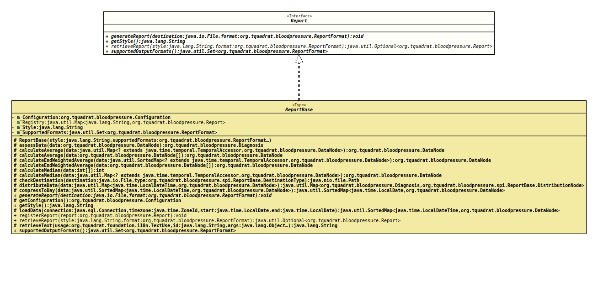

- All Known Implementing Classes:
ReportBase,SimpleReport
@ClassVersion(sourceVersion="$Id: Report.java 126 2022-02-19 21:13:35Z tquadrat $")
@API(status=STABLE,
since="0.0.1")
public sealed interface Report
permits ReportBase
The definition of a report generator.
- Author:
- Thomas Thrien (thomas.thrien@tquadrat.org)
- Version:
- $Id: Report.java 126 2022-02-19 21:13:35Z tquadrat $
- Since:
- 0.0.1
- UML Diagram
-

UML Diagram for "org.tquadrat.bloodpressure.Report"
{kind=link}
-
Method Summary
Modifier and TypeMethodDescriptionvoidgenerateReport(File destination, ReportFormat format) Generates the report and writes it to the destination from the configuration.getStyle()Returns the report style.retrieveReport(String style, ReportFormat format) Retrieves the report generator for the given style and format.Returns the supported output formats.
-
Method Details
-
generateReport
Generates the report and writes it to the destination from the configuration.- Parameters:
destination- The destination for the generated report.format- The output format for the report.- Throws:
IOException- A problem was encountered when writing the report to the destination.SQLException- A problem was encountered when retrieving the data from the database.
-
getStyle
Returns the report style.- Returns:
- The report style.
-
retrieveReport
Retrieves the report generator for the given style and format.- Parameters:
style- The report style.format- The output format for the report.- Returns:
- An instance of
Optionalthat holds the report generator. It will be Optional.empty() if there is no registered report for the given style, or when the style does not support the requested format.
-
supportedOutputFormats
Returns the supported output formats.- Returns:
- The supported output formats.
-